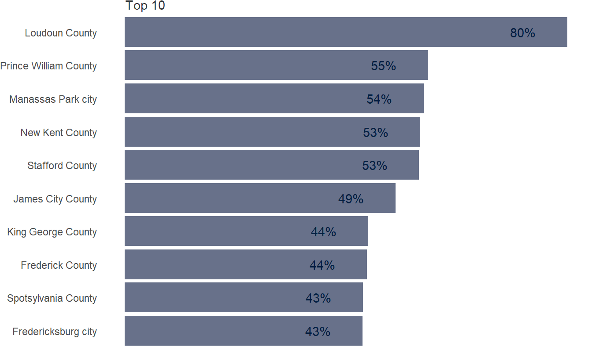
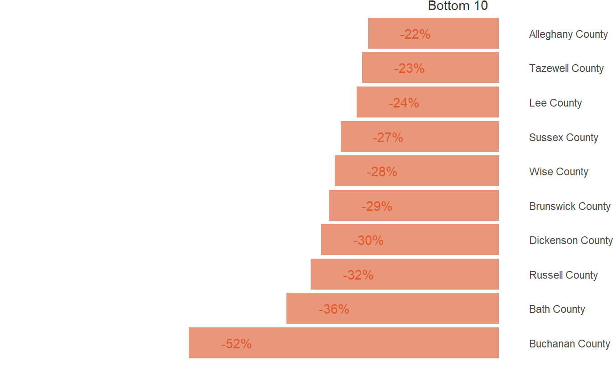
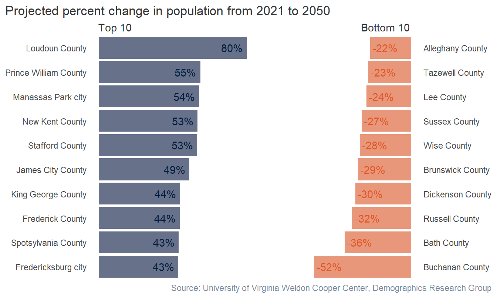

library(tidyverse)
library(readxl)
library(showtext)
# font_add_google(name = "Open Sans", family = "Open Sans")
# showtext_auto()
proj_raw <- read_xls("G:/My Drive/repos/sandbox/va-pop-proj/VAPopProjections_Total_2030-2050.xls",
sheet = "Total_2030,2040,2050",
range = "A6:E138",
col_names = c("fips", "geography", "p2030", "p2040", "p2050"),
col_types = c("text", "text", "numeric", "numeric", "numeric"))
estimate_raw <- read_xlsx("G:/My Drive/repos/sandbox/va-pop-proj/PopulationEstimates_July2021_VA_CooperCenter_formatted_1.xlsx",
sheet = "Table",
range = "A7:D139",
col_names = c("fips", "geography", "c2020", "e2021"),
col_types = c("text", "text", "numeric", "numeric"))Virginia Population Projections
Setup
Data wrangle
proj_data <- estimate_raw |>
select(
!geography) |>
mutate(
fips = paste0("51", fips)) |>
left_join(
proj_raw,
by = "fips",
keep = FALSE) |>
select(1, 4, 2, 3, 5:7)
proj_pct <- proj_data |>
select(2, 4, 7) |>
mutate(
pct_change = (p2050 - e2021)/e2021,
type = case_when(
pct_change > 0 ~ "Risers",
pct_change < 0 ~ "Fallers"
))Top 10 plot
library(scales)
library(patchwork)
top <- proj_pct |>
slice_max(pct_change, n = 10) |>
ggplot(
aes(x = pct_change,
y = reorder(geography, pct_change))) +
geom_col(fill = "#68718a") +
geom_text(aes(label = label_percent(accuracy = 1)(pct_change)),
color = "#011e41",
nudge_x = -0.08) +
scale_x_continuous(limits = c(0, 0.8)) +
labs(subtitle = "Top 10") +
theme(
plot.margin = margin(0, 0, 0, 0, "pt"),
panel.background = element_blank(),
axis.title = element_blank(),
axis.ticks = element_blank(),
axis.text.x = element_blank(),
plot.subtitle = element_text(hjust = 0.05,
color = "#353535",
margin = margin(0,0,0,0)))
top
Bottom 10 plot
bottom <- proj_pct |>
slice_min(pct_change, n = 10) |>
ggplot(
aes(x = pct_change,
y = reorder(geography, pct_change))) +
geom_col(fill = "#e8977a") +
geom_text(aes(label = label_percent(accuracy = 1)(pct_change)),
color = "#e0592a",
nudge_x = 0.08) +
scale_x_continuous(limits = c(-0.8, 0)) +
scale_y_discrete(position = "right") +
labs(subtitle = "Bottom 10",
y = "",
x = "") +
theme(
plot.margin = margin(0, 0, 0, 0, "pt"),
panel.background = element_blank(),
axis.title = element_blank(),
axis.ticks = element_blank(),
axis.text.x = element_blank(),
plot.subtitle = element_text(hjust = 0.925,
color = "#353535",
margin = margin(0,0,0,0)))
bottom
Combine plots
plot <- top + bottom
plot_final <- plot +
plot_annotation(
title = "Projected percent change in population from 2021 to 2050",
caption = "Source: University of Virginia Weldon Cooper Center, Demographics Research Group",
theme = theme(title = element_text(color = "#353535"),
plot.caption = element_text(color = "#808ea0",
margin = margin(0, 0, 0, 0))))
ggsave("plot.png", plot = plot_final, width = 800, height = 500, units = "px")
plot_final